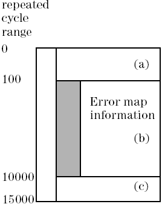

WFRE? - (WaveForm REceived data)
The WFRE? (WaveForm REceived data) query returns drive and receive edge action data in the requested cycle range, as well as error information. This is only valid for 6 edge setups.
This command is only supported for compatibility reasons and should not be used in new applications. Instead, EARE? should be used.
With this command you can retrieve site specific information (only one site can be in focus at a time). For the site in focus, SmarTest displays results in the Testflow Editor and in the result tools. Also, any firmware queries report setup and results for the site currently in focus only.
Syntax
WFRE? {start_cycle}, {no_of_cycles}, {(pinlist)}
returns:
WFRE {start_cycle}, {no_of_cycles}, {timing_set}, [err_type], {(pinlist)}, {#spec(data)}
start_cycle |
This is an integer that defines the first cycle for which information is to be returned. The scanning method and the range of values this parameter can take depend on the analysis mode:
|
|
no_of_cycles |
This is an integer that defines the number of cycles for which information is to be returned. The range for this parameter is 0 to 248. If a 0 is returned, no data is available for the given range. |
|
timing_set |
This parameter is an integer that represents the timing set used in the given cycle range. |
|
pinlist |
Information is only returned for the pins specified in pinlist. If more than one pin is to be included, the names must be separated with a comma. You can use the @ character to read the error data for all pins. |
|
err_type |
This parameter is optional and specifies what type of error information is available. The system returns a status only for O or IO pins: |
|
ERON |
Error information is available. The cycle range where error information is available is reported by the query VALD? - (VALid Data). |
|
NOER |
Error information is not available. The reported range lies outside the range covered by the Error Map. |
|
#spec(data) |
Edge action data in binary format. This parameter reports the length of data (in bytes) being transferred, followed by the reconstructed data. The data is returned for each pin separately. For each cycle of the reported cycle range 6 bytes are returned. Each of these bytes has to be decoded as follows: |
|
bit 7: Error flag. |
||
0 |
No error on receive edge, or a drive or unused edge |
|
1 |
Error on receive edge. (The system returns this only if err_type is ERON). In case of a failing window compare, both the window open edge and the window close edge are marked. |
|
bits 6, 5: Data parameter |
||
00 |
Fixed value |
|
10 |
Data parameter 1 |
|
11 |
Data parameter 2 |
|
bit 4: Edge direction |
||
0 |
Drive / tri-state edge |
|
1 |
Receive edge |
|
bits 3, 2, 1, 0: Edge action |
||
If bit 4 is a 0, then drive / tri-state data: |
||
bits 3, 2: Tri-state data |
||
10 |
Tri-state off |
|
11 |
Tri-state on |
|
00 |
Not used |
|
bits 1, 0: Drive data |
||
10 |
Drive 0 |
|
11 |
Drive 1 |
|
00 |
Not used |
|
If bit 4 is a 1, then receive data: |
||
bit 3: Compare type |
||
0 |
Edge compare |
|
1 |
Window compare |
|
bits 2, 1, 0: Compare method |
||
010 |
Compare to 0 |
|
011 |
Compare to 1 |
|
001 |
Compare to intermediate |
|
100 |
Compare to mask |
|
101 |
Compare to unstable |
|
000 |
Not used |
|
110 |
Reconstruction not possible |
|
111 |
Window close |
|
If reconstruction is not possible (code 110 on bits 2, 1, 0), there has been more than one edge or window compare within a single test system cycle.
If error bit 7 is set, an error has occurred on at least one of these edge or window compares.
Errors
An error is generated if:
- You send the query while the sequencer is running. There is then no result data available.
- You enter an invalid cycle range.
Example
WFRE? 0, 1, (pin1)
returns:
WFRE 0,1,3,ERON,(pin1),#9000000006\x0B\x0A\x9B\x9F\x00\x00\x0A
This example returns edge action drive and expected data (in binary notation) for one cycle. To decode the data, convert it into binary notation and use the lists above.
The data in binary format is:
0000 1011 0000 1010 1001 1011 1001 1111 0000 0000 0000 0000
The edge actions are RZ on the drive edges 1 and 2 and a failed window compare (received value: 1) on the receive edges 3 and 4. Edges 5 and 6 are unused.
The WFRE? answer will be split if the requested cycle range is greater than the available error map information, as shown below:

WFRE? 0,15000, (pin1) WFRE 0, 100, 1, NOER, (pin1), BinData (a) WFRE 100, 9900, 1, ERON, (pin1), BinData (b) WFRE 10000, 5000, 1, NOER, (pin1), BinData (c)
Functional changes
- Introduced before SmarTest 6.3.2